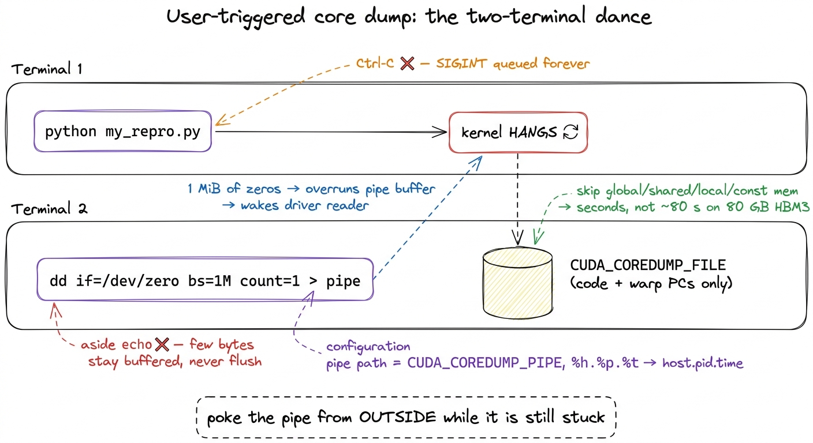
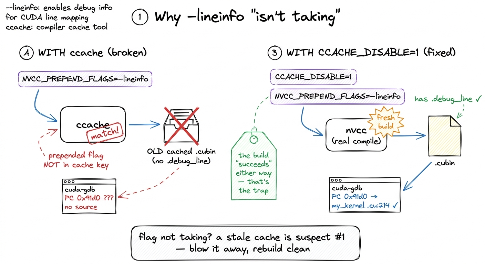
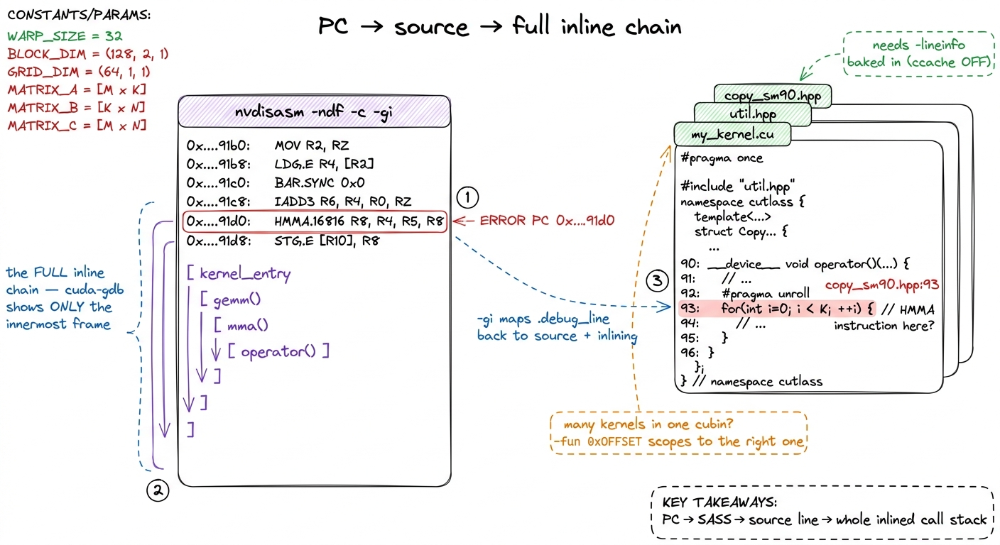
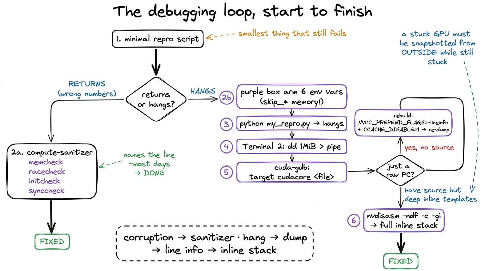

Debugging kernels: the vLLM workflow DEBUG
Here is a fact about GPUs that trips up almost everyone the first time, including me: when you launch a kernel, nothing runs. Not yet. You write kernel<<<grid, block>>>(...) in your program, the line returns immediately, and your CPU code marches on to the next statement as if the GPU work were already done. It isn't. The launch only dropped a note into a queue that the GPU will get to whenever it gets to it. This one design choice — that kernel launches are asynchronous — is the reason GPU debugging feels so alien, and it is where this whole article begins.
Let me state the question we are going to answer, plainly, so you know where we are headed. A GPU kernel just failed. How do I find out where, and why? On a CPU that question is boring — you get a stack trace pointing at the exact line, or you set a breakpoint and step through. On a GPU it is genuinely hard, and the reason it is hard follows directly from that asynchronous launch. So before we touch a single tool, we need to build one mental model and hold onto it for the rest of the article.
The mental model: the CPU mails a letter it never waits for
Picture two people who can only communicate by mail. The host (your CPU, running Python or C++) writes instructions on a card — "multiply these two matrices" — drops it in a mailbox, and walks away immediately to do other things. The device (the GPU) checks its mailbox on its own schedule, does the work, and puts the answer in an outbox. The host does not wait by the mailbox. It only comes back to collect the answer when it hits a line that explicitly says "I need the result now" — a synchronization point, like copying the output tensor back or calling torch.cuda.synchronize().
 figure rendering · The core intuition. The host mails work and walks away, so a failure o
figure rendering · The core intuition. The host mails work and walks away, so a failure oNow watch what this does to a bug. Suppose one thread on the GPU writes to memory it doesn't own — one index past the end of an array. On a CPU that would segfault right there, and the debugger would stop on the offending line. On the GPU, the host already walked away. The bad write happens, corrupts something, and the kernel keeps going. Your Python keeps going too. The two of them stay out of sync until, thirty statements later, you finally copy the result back and it's full of NaN, or the driver notices the fault at the next synchronize and throws an error whose stack trace points at a copy operation that had nothing to do with the real bug.
So the first thing to internalize is this: on a GPU, the place the error is reported is almost never the place the error happened. By the time you see it, the thread that misbehaved is long gone — its registers recycled, its warp retired, its state overwritten by the thousand threads that ran after it.1 A warp is a group of 32 threads that the hardware runs in lockstep — the true unit of scheduling on NVIDIA GPUs. When I say a warp "retired," I mean those 32 threads finished and the physical registers and scheduler slot they used were handed to the next warp. There is no undo. This is why post-mortem, snapshot-based debugging matters so much on the GPU: you cannot re-run history, you can only freeze it. This is the enemy. Everything below is about defeating it.
Two kinds of failure, two completely different tools
Here is the single most useful distinction in GPU debugging, and almost nobody tells you it up front. There are two kinds of kernel failure, and they need two entirely different tools. Get the category wrong and you will spend an afternoon pointing the right tool at the wrong problem.
Category one: the kernel returns, but the answer is wrong. An out-of-bounds read, a race between two warps on shared memory, a use of uninitialized memory. The kernel finishes — that's the tricky part — it just finishes with corrupt output. These bugs are often intermittent: right nine times, wrong the tenth, depending on the exact interleaving of warps that day.
Category two: the kernel never returns at all. It hangs. A barrier that not every thread reaches, an infinite loop on one lane, a deadlock between warps waiting on each other. The GPU spins forever, your terminal freezes, and — as we are about to see in painful detail — Ctrl-C does absolutely nothing.
The reason this split matters is that a returning failure leaves evidence you can inspect after the fact, so a checker tool that runs alongside the kernel can catch it. A hanging failure never reaches the "after," so there is nothing to inspect unless you can reach into the frozen GPU and take a snapshot while it is still stuck. Different problem, different tool. Let's ask the reader's natural first question — "can't I just run some checker?" — and answer it, because for category one, yes, you can.
 figure rendering · The very first fork. Decide which branch you are on before you reach f
figure rendering · The very first fork. Decide which branch you are on before you reach fFirst line of defense: compute-sanitizer
Before any heavy machinery, run the kernel under compute-sanitizer. If you have ever used Valgrind or AddressSanitizer on CPU code, this is the same idea for the GPU: a wrapper that instruments every memory access your kernel makes and screams when one is illegal. It catches the majority of category-one bugs with no debugger at all. You invoke it as a prefix on your normal command:
compute-sanitizer --tool memcheck python my_repro.py
compute-sanitizer --tool racecheck python my_repro.pyThat's it — you didn't change your code, you changed how you launched it. Now, what do the tools actually do, and why are there four of them? Because there are four distinct ways to touch memory wrongly, and each needs its own checker:
memcheckwatches global memory (the big off-chip HBM the whole GPU shares) and reports out-of-bounds and misaligned accesses. When it fires, it names the offending thread and — if the binary carries line info, which we'll get to — the exact source line. This is your first call for the classic "wrote one past the end" bug.racecheckinspects shared memory (SMEM — the small, fast, on-chip scratchpad that threads in a block share). It hunts for the read-after-write race: warp A writes a value, warp B reads it, and there is no__syncthreads()between them to guarantee the write landed first. This is the bug that is usually right and occasionally, maddeningly, wrong — exactly the intermittent kind that async execution makes so hard to reproduce by hand.initcheckflags reads of uninitialized global memory — you allocated a buffer, forgot to fill part of it, and read garbage.synccheckflags illegal barrier usage: a__syncthreads()that not every thread in the block reaches. On a divergent-barrier bug,synccheckoften names the culprit faster than anything else, and — this is the important bridge — that same bug, if it doesn't get caught here, is exactly what causes the hangs we spend the second half of the article on.2 The tools are separate on purpose, and they cost differently.racecheckin particular tracks shared-memory access ordering and can run much slower thanmemcheck. Run the cheap, likely one first. My habit:memcheckfor any "wrong numbers" bug,racecheckonly once I suspect shared memory. Running all four blindly on every failure wastes minutes you don't need to spend.
One honest caveat about cost. Instrumenting every memory access is not free — expect a slowdown of 10× or more. That sounds alarming until you remember what you are doing: you are not benchmarking, you are asking a yes/no question — is there an illegal access, and where? A kernel that normally runs in 200 microseconds taking 2 milliseconds under the sanitizer is completely irrelevant. Let it be slow.
Most days, for a category-one bug, this is the whole story. The sanitizer names the line, you fix the index, you move on. The hard case — the one that ate my afternoons before I learned this workflow, and the one the vLLM team wrote up after chasing a nasty hang deep in CUTLASS — is the kernel that hangs. The rest of the article is about that.
Why Ctrl-C does nothing (and why that tells you which tool you need)
Your kernel hangs. Instinctively, you hit Ctrl-C. Nothing happens. You hit it again, harder, as if the extra force helps. Still nothing. The terminal is a frozen brick. Before we fix this, let's ask why — because the answer isn't a quirk, it's the whole diagnosis, and it points straight at the tool we need.
Recall the mental model. Your Python process launched a kernel and then hit a line that needs the GPU's answer — a synchronize, or the implicit sync before the next copy. At that moment the Python interpreter called down into the CUDA driver (libcuda) and is now blocked inside a C function, waiting for the GPU to finish. And the GPU never will, because it's hung.
Now, what is Ctrl-C? It sends SIGINT to your process. Python's job is to turn that signal into a KeyboardInterrupt exception. But — and here is the crux — Python can only raise that exception between bytecode instructions, when the interpreter is actually running Python. Right now the interpreter isn't running Python. It is parked deep in a libcuda call frame that has no idea what a KeyboardInterrupt is. The signal gets delivered, queued, and simply waits for the C call to return so Python can check for it. The C call never returns. The signal sits in the queue forever. You are staring at a frozen terminal with no traceback, no line number, nothing.3 There is a blunt escape hatch: put import signal; signal.signal(signal.SIGINT, signal.SIG_DFL) at the top of your repro script. This restores the default OS-level SIGINT handler, so Ctrl-C kills the process outright instead of politely waiting for Python. The cost is that you lose Python's nice exception and stack trace — the process just dies. Useful to escape a hang; useless for understanding it. To understand it, you need the snapshot below.
 figure rendering · A zoom into the frozen stack. The interrupt lands on the Python frame,
figure rendering · A zoom into the frozen stack. The interrupt lands on the Python frame,So the diagnosis writes the prescription. The process itself is helpless — it can't interrupt the GPU and it can't report anything, because it's blocked. The only actor that knows what's happening is the GPU, and the GPU is stuck mid-kernel. Therefore we must ask the GPU to produce a snapshot of itself while it is still stuck — every warp's program counter, the exact instruction each is executing, the source line if we've arranged for it. CUDA supports precisely this. It's called a user-triggered core dump, and it's the heart of the workflow.
Arming the core dump: six environment variables, one job each
The plan is: before we launch, we arm the GPU to be dumpable on command. Then, when it hangs, we poke it from a second terminal and it writes out its frozen state. Arming is done entirely through environment variables set in the shell that will run the repro. Here they are, and every single one earns its place — I'll justify each rather than ask you to copy a magic incantation.
export CUDA_ENABLE_USER_TRIGGERED_COREDUMP=1
export CUDA_ENABLE_COREDUMP_ON_EXCEPTION=1
export CUDA_COREDUMP_SHOW_PROGRESS=1
export CUDA_COREDUMP_PIPE="/tmp/cuda_coredump_pipe_%h.%p.%t"
export CUDA_COREDUMP_FILE="/tmp/cuda_coredump_%h.%p.%t"
export CUDA_COREDUMP_GENERATION_FLAGS='skip_nonrelocated_elf_images,skip_global_memory,skip_shared_memory,skip_local_memory,skip_constbank_memory'CUDA_ENABLE_USER_TRIGGERED_COREDUMP=1is the master switch. It tells the driver: allow an external signal to make you dump. Without it, poking the pipe later does nothing.CUDA_ENABLE_COREDUMP_ON_EXCEPTION=1adds a second trigger: dump automatically if the GPU hits an exception (a fault). This covers the category-one OOB case as a fallback, in case the sanitizer didn't already tell you enough — you get a dump for free when the kernel crashes, not just when it hangs.CUDA_COREDUMP_SHOW_PROGRESS=1prints progress as the dump is written, so you can watch it happen instead of guessing whether it's stuck too.CUDA_COREDUMP_PIPEnames the named pipe we'll poke to trigger the dump (more on this next). The%h.%p.%tin the path expand to host, PID, and timestamp — which matters the moment more than one process is alive, so two dumps never collide on the same filename.CUDA_COREDUMP_FILEnames where the dump lands, with the same%h.%p.%texpansion.CUDA_COREDUMP_GENERATION_FLAGSis the one that makes this usable, and it deserves its own paragraph.
Let's do the napkin math on why that last flag matters, because it's the difference between a workflow you'll actually use and one you'll abandon. An H100 carries 80 GB of HBM3 global memory. A "full" core dump faithfully serializes all of it to disk. Suppose your disk writes at a healthy 1 GB/s — then dumping 80 GB takes 80 seconds, and that's optimistic; in practice it feels like forever, and you're doing it on every iteration of a debug loop. But ask yourself: to locate a hang, do you need the contents of 80 GB of matrices? No. You need to know where every warp is stuck — its program counter and the code around it. That's kilobytes, not gigabytes.
That's exactly what the flags carve away. skip_global_memory drops the 80 GB HBM working set. skip_shared_memory, skip_local_memory, and skip_constbank_memory drop the other memory regions. skip_nonrelocated_elf_images skips code images you don't need reloaded. What's left is the code and the register/PC state — the thing you actually came for — and the dump goes from ~80 seconds to a couple of seconds.4 This is the single most important flag for iteration speed, and the failure mode without it is subtle: the dump works, it's just so slow you assume it hung and kill it, then conclude the whole mechanism is broken. If you later find you genuinely need to inspect a specific global buffer — say, to see the corrupt values a hang left behind — drop the skip_global_memory token and re-run that one time. But start skipped, always.
Then you run the repro normally in that armed shell:
python my_repro.pyand wait for it to hang.
Triggering the dump: the two-terminal dance and why dd, not echo
CUDA_COREDUMP_PIPE points at a FIFO — a first-in-first-out named pipe, a special file that behaves like a one-way tube between processes. The driver sits at the reading end, watching. Write any bytes into the other end and the driver wakes up and produces the dump. Because the %h.%p.%t template already resolved at launch, the real pipe path for your run is something concrete like /tmp/cuda_coredump_pipe_gpu-node.3000837.1764236276. If you're not sure of the exact name, you can find it by listing the hung process's open file descriptors:
ls /proc/PID/fd/ -alth | grep /tmp/cuda_coredump_pipe_Now, from a second terminal — the first one is frozen, remember, it's parked in the hung synchronize — you poke the pipe:
dd if=/dev/zero bs=1M count=1 > /tmp/cuda_coredump_pipe_gpu-node.3000837.1764236276Here is the trap, and it's a good one to understand rather than memorize. Why dd, and why exactly a megabyte of zeros? Because pipes are buffered. When you write a few bytes with a bare echo, those bytes can sit in the pipe's kernel buffer without ever being flushed through to the reader on the other end. The driver's reader never wakes, the trigger silently doesn't fire, and — the cruel part — you sit there waiting, conclude the mechanism is broken, and give up on the one technique that would have worked. The dd if=/dev/zero bs=1M count=1 writes a full megabyte, which comfortably overruns any pipe buffer and forces the write through to the reader.5 The pipe buffer on Linux defaults to 64 KiB, so in principle even a modest write should flush — but the point of the megabyte is to remove all doubt. When a trigger "doesn't fire," buffering is the first suspect, and a big write is the cheapest way to rule it out. This is the same class of bug as a compiler flag that "isn't taking" — the mechanism is fine, something in between is silently swallowing your input.
With CUDA_COREDUMP_SHOW_PROGRESS=1 set, you'll now see the dump being written in the first terminal, and a CUDA_COREDUMP_FILE lands on disk within seconds (thanks to those skip flags).

figure rendering · The whole trick in one picture. Terminal 1 hangs; Terminal 2 pushes aReading the dump: cuda-gdb on a frozen GPU
Now the satisfying part. We have a file that captured the GPU mid-hang. Load it into cuda-gdb, NVIDIA's fork of gdb that understands device core files:
cuda-gdb
(cuda-gdb) target cudacore /tmp/cuda_coredump_gpu-node.3000837.1764236276target cudacore tells cuda-gdb "this isn't a live process, it's a device snapshot — load it." And suddenly you can walk the frozen GPU as if you'd paused it. A few commands carry most of the weight:
info cuda kernelslists which kernels were resident on the device when you froze it.cuda kernel Nswitches focus to kernel numberN, andbt(backtrace) walks its call stack.info symbol $errorpctakes the program counter where the fault or hang localized and resolves it to a symbol name — the function that was executing.
Here is where a divergent-barrier hang becomes visible in a way it never was from your frozen terminal. Suppose your kernel has a __syncthreads() inside an if that not every thread takes. The threads that entered the branch reach the barrier and wait for their 32-lane warp to reassemble. The threads that skipped the branch already moved on and will never come back. Deadlock. In cuda-gdb, you can see it: two groups of threads parked at two different program counters, one group frozen forever on the BAR.SYNC instruction, waiting for siblings that are somewhere else entirely.6 This is a whole category of bug the SIMT execution model quietly lets you write. Because 32 threads share one program counter and the hardware serializes divergent branches, a barrier inside a divergent branch is a deadlock you can express in perfectly innocent-looking C++. See SIMT and divergence for exactly why the hardware permits this, and why the fix is to hoist the barrier out of the branch so all lanes reach it.
There is one honest limitation, and it's the bridge to the last two sections. Without line information baked into the binary, all cuda-gdb can give you is a raw program-counter address — 0x...91d0 — and a wall of SASS, the GPU's actual machine assembly. That tells you where in the compiled code the hang is, which is real progress, but not yet where in your source. To turn a PC into a source line, the binary has to carry a map from one to the other. Let's build that map.
Making SASS point back at source: -lineinfo, without slowing anything down
The map we need is a .debug_line table — a section embedded in the binary that ties each SASS machine instruction back to the source file and line it came from. You ask the compiler to emit it with the -lineinfo flag. The clean way to force that across a build system you don't fully control (and in vLLM, or any PyTorch extension, you very much don't) is the prepend-flags escape hatch:
export NVCC_PREPEND_FLAGS='-lineinfo'NVCC_PREPEND_FLAGS injects -lineinfo into every nvcc invocation, so you don't have to spelunk through CMake or setup.py hunting for where the compile commands are assembled. You set one environment variable and rebuild.
Now, a reader who knows a little about debug builds should be objecting right about now: isn't the debug flag -G? Why not just use that? Excellent question, and the answer is the reason -lineinfo exists as a separate thing. The full device-debug build, -G, disables device-side optimization, bloats register usage, and changes kernel timing. And changing the timing is a catastrophe for exactly the bugs we care about: a race or a marginal deadlock is a timing-dependent phenomenon. Slow the kernel down, reorder the instructions, and the race often vanishes — you end up debugging a program that no longer misbehaves. -lineinfo is the surgical alternative: it keeps the real, optimized SASS the GPU actually runs, and merely annotates it with source-line info.7 Reach for full -G only as a genuine last resort — for a logic bug that reproduces deterministically regardless of timing and that you cannot localize any other way. For anything intermittent (which is most hangs and all races), -G is likely to make your bug disappear and waste your day. Keep the real binary; annotate, don't rebuild-for-debug. This is the PTX vs SASS boundary made debuggable: same machine code, now with a back-reference to your source.
The trap that eats an afternoon: ccache silently ignores your flag
Here is the failure that got me, and it's worth a whole section because it is convincing in a way that makes you doubt everything except the real cause. You export NVCC_PREPEND_FLAGS='-lineinfo'. You rebuild — it succeeds, no errors. You reload the dump in cuda-gdb — and there is still no line info. Just the raw PC again. You check the env var: it's set. You check the build log: the flag is there. Everything looks right, and yet nothing changed.
The culprit is ccache, a compiler cache that speeds up rebuilds by remembering "I've compiled this exact source with this exact command before — here's the object file, no need to recompile." The problem is that ccache keys its cache on the command line it recognizes, and it does not always treat a prepended flag as part of that key. So it sees the same source, decides it already has the answer, and hands you back the previously compiled object — the one built without -lineinfo — byte for byte. The build "succeeds" because ccache genuinely did produce a valid object; it's just the old one.
The fix is to take the cache out of the loop for the debug rebuild:
export CCACHE_DISABLE=1
# then force a clean recompile of the offending translation unit
figure rendering · The afternoon-eater, before and after. ccache hands back the old objec.debug_line.The general lesson outlives this specific tool: any time a compiler flag "isn't taking," a stale cache is the first suspect. Blow the cache away and rebuild clean before you doubt the flag itself. Do that, and the .debug_line section is finally present in the cubin — and now cuda-gdb resolves your PC straight to my_kernel.cu:214.
The last mile: nvdisasm -gi recovers the full inlined call stack
You'd think a source line is the end. For a simple kernel, it is. But in the kernels that actually run in production — CUTLASS, FlashAttention, anything built from deep C++ templates — there's one more layer, and it's exactly where the vLLM team ended up when they chased a real hang in the CUTLASS MLA attention backend.8 That vLLM hang was hard-to-reproduce and lived in upstream CUTLASS, ultimately fixed in CUTLASS v4.3.0. The whole reason the workflow in this article exists in their write-up is that this bug could not be cornered by staring at Python — it took a core dump, line info, and the full inline stack to see that the fault sat inside layers of inlined template machinery, not in the vLLM call site that appeared to trigger it.
The limitation is this: cuda-gdb, at a given PC, shows you only the last inline expansion. Modern kernels inline aggressively — a single SASS instruction can be the fused end product of a dozen inlined function calls collapsed together. So cuda-gdb tells you the innermost function that blew up, but not the call path that led there. It's like being told a crash happened "in memcpy" without knowing who called memcpy. You know the crater; you don't know the trajectory.
nvdisasm recovers the whole chain. The procedure: find the offending PC in cuda-gdb, then disassemble the cubin with source and inline annotations turned on, and grep to the PC:
nvdisasm -ndf -c -gi /path/to/kernel.cubin > disasm.txt
grep -C20 <ERROR_PC_HEX> disasm.txtThe flags, each doing one job:
-cprints only the code sections (skip the data, you don't need it).-ndfdisables the dataflow analyzer — it's faster, and you don't need its control-flow graph for this.-giis the payoff flag: it annotates the disassembly with.debug_linesource lines and the full function-inlining info.
Around your error PC you now see the complete inline stack — something like kernel_entry → gemm() → mma() → operator() — each frame mapped to an exact source file and line. In the vLLM case the annotation reads like a chain of "File copy_sm90.hpp, line 93, inlined at util.hpp, line 158, inlined at util.hpp, line 185…" running ten-plus frames deep. That is what lets you fix the bug instead of merely locating the crater — you can see which caller passed the bad argument, not just where it detonated.
One more practical wrinkle. When a single cubin holds several kernels, a raw PC can be ambiguous — the same address offset might exist in more than one function. Disambiguate by pulling the ELF section offset for the specific kernel, then scoping the disassembly to it:
cuobjdump -elf kernel.cubin > elf.txt
grep ".text.<KERNEL_NAME>" elf.txt | grep PROGBITS # find the function's offset
nvdisasm -ndf -c -gi -fun 0x<OFFSET> kernel.cubin # -fun scopes to that one kernel-fun 0x<OFFSET> tells nvdisasm "only this function," so you're guaranteed to be reading the right one.

figure rendering · The final payoff. `nvdisasm -gi` turns a bare program counter into thenvdisasm -gi turns a bare program counter into the exact source line and the complete chain of inlined calls that produced it — the part cuda-gdb withholds.The whole workflow, on one page
Step back and look at the full loop, because the point of all this detail is that the loop itself is short and identical every time. Let me lay it out as the decision it really is.

figure rendering · The complete loop. One fork at the top decides everything; each branchReproduce the failure in the smallest script you can — a tight repro is worth more than any tool. Then take the fork:
If the kernel returns with wrong numbers, run compute-sanitizer: memcheck for out-of-bounds, racecheck for shared-memory races, initcheck/synccheck for the rest. Most days it names the line and you're done.
If the kernel hangs, don't touch Ctrl-C. Arm the six core-dump environment variables (with the skip_* memory flags, so the dump takes seconds instead of ~80). Launch, let it hang, and from a second terminal push a megabyte through the named pipe with dd — not echo. Load the dump into cuda-gdb with target cudacore. If all you get is a raw PC, rebuild with NVCC_PREPEND_FLAGS='-lineinfo' and CCACHE_DISABLE=1, then re-dump. And when the crash lives inside a tower of inlined templates — the CUTLASS/FlashAttention reality — nvdisasm -ndf -c -gi hands you the complete call stack cuda-gdb alone withholds.
Why this is finite, not hopeless
None of this makes GPU debugging pleasant. But it makes it finite, and that's the whole win. Go back to the mental model one last time. The reason a hang used to eat a day was never that the information was missing. The frozen warps carry their own program counters. The cubin carries its own line table. The inline chain is right there in .debug_line. Every fact you need is present in the stuck GPU — it just isn't reachable by the reflex everyone reaches for first.
That reflex is Ctrl-C, the one move that cannot work, precisely because the host is blocked in the driver waiting for a GPU that will never answer. Once you internalize the real shape of the problem — that a stuck GPU has to be snapshotted from the outside, while it is still stuck — the rest is just knowing which six environment variables to set, which command flushes the pipe, and which flag survives the cache. That's a recipe, not a mystery.
And for the failures that don't hang and don't corrupt — the subtle numerical drift, the occupancy cliff, the phantom copy that shows up only under load — the right instrument isn't a debugger at all. It's a profiler, and reading one honestly is its own craft: see the benchmark methodology and kernel-launch anatomy articles for that side of the toolbox. Debuggers answer where is it broken; profilers answer why is it slow. Knowing which question you're asking is, as always, half the battle.